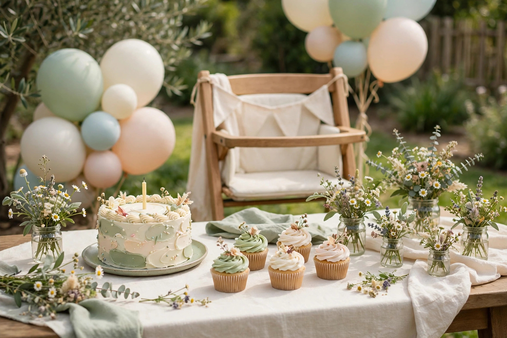

Birthday Party Ideas
Birthday party ideas for kids that are easy, fun and budget-friendly — simple themes, games, food and a planning timeline for a joyful day.
-
 Birthday Party IdeasGifts for Kids
Birthday Party IdeasGifts for Kids30 Birthday Party Ideas for Kids That Are Easy, Fun and Budget-Friendly
Simple themes, easy games and party food kids love — plus a planning timeline so the day feels joyful, not rushed.
-

Birthday Party IdeasFirst Birthday Party20 First Birthday Party Ideas That Are Simple, Sweet and Stress-Free
A first birthday is really a party for the grown-ups — simple themes, a smash cake and a calm plan for 10 to 25 guests.
-
 Birthday Party IdeasBluey Birthday Party
Birthday Party IdeasBluey Birthday Party25 Bluey Birthday Party Ideas Kids Will Love
Blue and orange decorations, games from the show and a blue-iced cake — a Bluey party for ages 3 to 8, with honest prices and a simple plan.
Browse by category
Find ideas by who you are shopping for, or what you are celebrating.